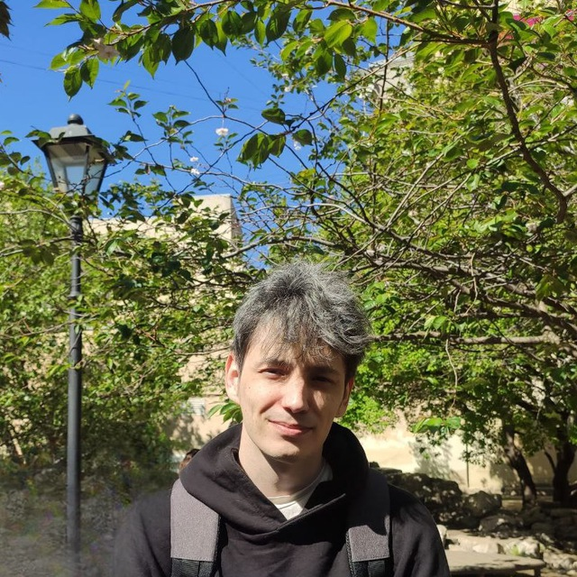

Чёткие объяснения, разобранные задачи и бесплатные PDF-конспекты по математическому анализу, линейной алгебре, статистике и геометрии - всё в одном месте.

ВладиславНажмите на карточку - PDF откроется прямо на странице. Также можно скачать.
Не удалось открыть PDF в браузере.
Открыть в новой вкладке →Привет! Я Владислав Габидуллин, репетитор по математике с опытом работы со студентами разного уровня.
Я убеждён, что у каждого понятия есть интуитивное объяснение, и «неспособных к математике» людей не бывает - просто ещё не нашёлся правильный подход. Занятия всегда спокойные, терпеливые и выстроенные под вас.
Все PDF-конспекты на этом сайте - мои собственные разборы и конспекты. Пользуйтесь бесплатно.
Занятия доступны онлайн и очно. Первая консультация — бесплатно.